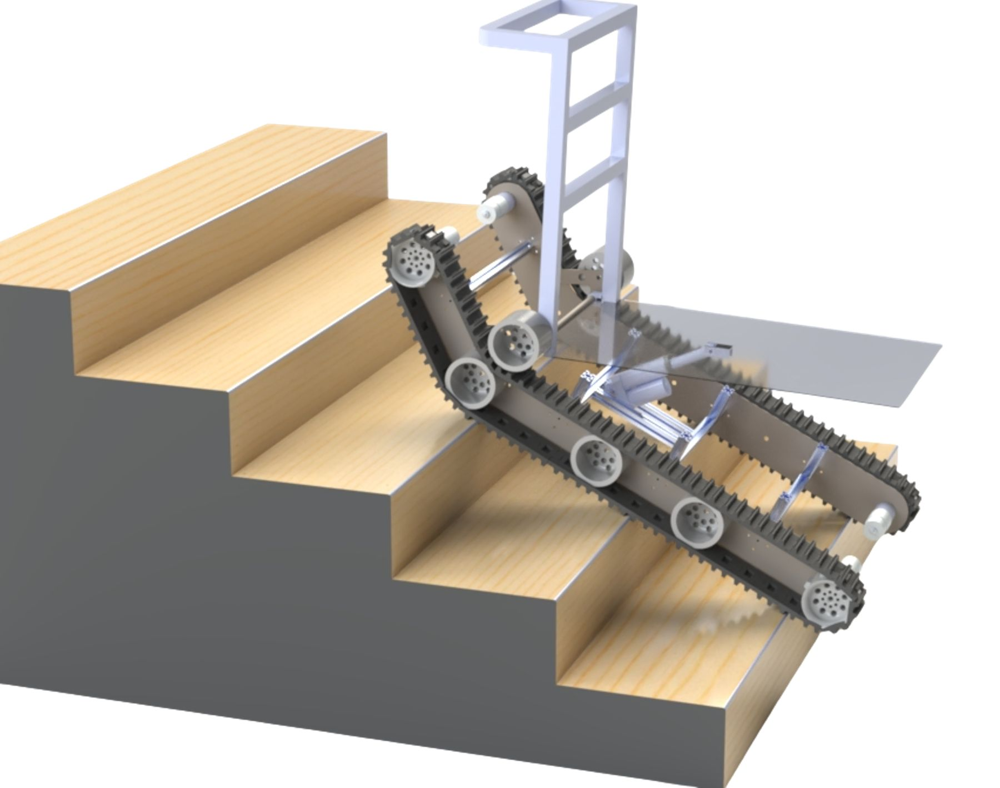
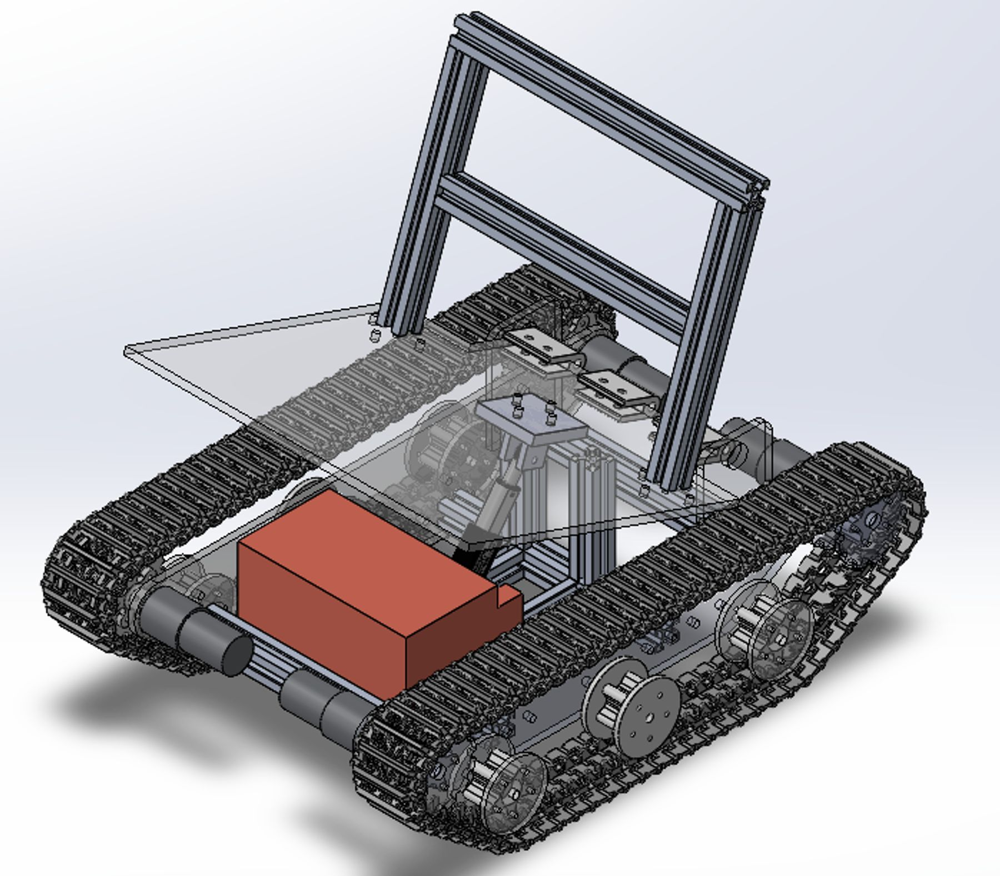

← Projects / Case study 03
⚙️Capstone · prototype tested
ClimbCart.Stairs arethe terrain.
Most carriers assume flat ground. ClimbCart is a tracked robot built for narrow, uneven Indian staircases, taken from field surveys through CAD and FEA to a working prototype on a real step.
27°track incline for stair contact
800mmlong, 600 mm wide
45kg·cmdrive motor
2prototype trial stages
01 From CAD to hardware
Designed, iterated, built.




02 In action
On the bench, then on the step.
My role
From survey to CAD to a robot on a real step.
Capstone engineering project. I worked on the mechanical design, CAD, FEA, prototyping and validation. Mentors: Prof. Ashish Singla and Prof. Dheeraj Gupta.